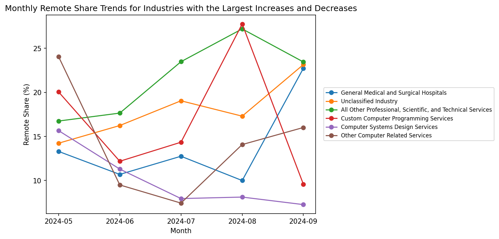

Total postings: 72,498
NAICS_2022_6_NAME REMOTE_TYPE_NAME POSTED
0 Automotive Parts and Accessories Retailers [None] 6/2/2024
1 Temporary Help Services Remote 6/2/2024
2 Claims Adjusting [None] 6/2/2024
3 Commercial Banking [None] 6/2/2024
4 Unclassified Industry [None] 6/2/2024Are remote jobs increasing or decreasing across industries?
Introduction
Research Question
This section examines whether remote jobs are increasing or decreasing across industries in 2024 using the Lightcast job postings dataset. To answer this question, I compare the share of job postings labeled as remote across major industries from May to September 2024. Rather than focusing only on total posting volume, this analysis emphasizes the percentage of remote postings within each industry, which allows for a more meaningful comparison across sectors of very different sizes.
Why This Topic Matters
Remote work remains an important feature of the post-pandemic labor market, but its direction is not uniform across industries. Prior research shows that the feasibility and prevalence of remote work vary substantially across sectors, occupations, and locations rather than following a single labor market pattern (Dingel and Neiman 2020; Hansen et al. 2023). In addition, working from home appears to have remained a persistent employment arrangement rather than a purely temporary pandemic phenomenon (barrero2021?).
This topic is especially important for job seekers because remote-work availability can shape where they apply, which industries they prioritize, and how they evaluate flexibility in future career opportunities. More broadly, this section shares a common theme with recent remote-work research: remote-work opportunities vary across industries and do not move in one uniform direction across the labor market. Using Lightcast job postings, this section examines how remote job share changed across major industries from May to September 2024, with the goal of identifying whether remote opportunities increased, decreased, or diverged by sector.
Data Loading
Key Variables
This analysis uses the 2024 Lightcast job postings dataset to examine changes in remote job share across industries. To answer the research question, three variables are especially important: NAICS_2022_6_NAME, REMOTE_TYPE_NAME, and POSTED. Together, these fields provide the industry classification, the remote-work label, and the posting date needed to track industry-level changes in remote hiring over time.
These variables make it possible to analyze remote job postings at the industry-month level. Specifically, NAICS_2022_6_NAME identifies the industry of each posting, REMOTE_TYPE_NAME indicates whether the position is labeled as remote or non-remote, and POSTED provides the time information needed to compare remote job share from May to September 2024.
The preview above confirms that the dataset contains the core variables required for this section. These fields provide the foundation for defining remote-work categories, calculating monthly remote job share, and comparing how remote opportunities changed across industries over time.
Defining Remote Work Categories
Industry Selection
Before measuring remote job trends across industries, I first restricted the analysis to the 15 industries with the largest number of job postings. This step keeps the comparison focused on the most active sectors in the dataset and reduces the influence of industries with relatively small posting counts. I also converted the posting date into monthly periods so that industry-level remote hiring patterns could be tracked consistently from May to September 2024.
Remote Work Classification
Because the raw values in REMOTE_TYPE_NAME are not fully standardized, I grouped postings into three broader categories: Remote, Hybrid, and Onsite. Postings explicitly labeled Remote were classified as remote roles, postings labeled Hybrid Remote were classified as hybrid roles, and postings labeled Not Remote or missing values such as [None] were grouped with on-site roles for simplicity.
This classification step makes the dataset easier to interpret and provides a more consistent basis for industry-level comparison. Since the goal of this section is to evaluate whether remote opportunities increased or decreased across industries, the later analysis focuses specifically on the share of postings classified as Remote.
month
2024-05 15133
2024-06 14381
2024-07 12502
2024-08 15105
2024-09 15333
Freq: M, Name: count, dtype: int64
remote_group
Onsite 57697
Remote 12497
Hybrid 2260
Name: count, dtype: int64
REMOTE_TYPE_NAME remote_group
29 Hybrid Remote Hybrid
10 Not Remote Onsite
1 Remote Remote
0 [None] OnsiteThe output confirms that the postings can be organized into monthly periods and consolidated into broader remote-work categories for analysis. This preparation step supports a clearer comparison of remote job trends across industries over time.
Monthly Trends for Selected Industries
Month-to-Month Patterns
Although the previous figure summarizes the net change in remote job share from May to September 2024, it does not show how that change developed from month to month. To better understand the time path of remote hiring, I plotted the industries with the largest increases and the largest decreases in remote job share over the period.
This figure adds an important layer to the analysis because industries may arrive at a similar final increase or decrease through very different monthly patterns. Some industries may show relatively steady movement, while others may fluctuate substantially before ending higher or lower in September than in May.
The line chart shows that remote job trends did not evolve in the same way across industries from month to month. Industries with positive end-of-period changes generally moved upward overall, whereas industries with negative end-of-period changes tended to move downward or remained volatile before ending lower in September than in May.

Several upward-trending industries, such as General Medical and Surgical Hospitals and Unclassified Industry, finished the period with clearly higher remote job share than they had in May. By contrast, several computer-related industries, including Computer Systems Design Services and Custom Computer Programming Services, showed overall declines despite short-term fluctuations during the middle of the period.
This figure helps clarify that the final increase-or-decrease values reported in the previous section were not simply the result of comparing two isolated months. Instead, they reflect different monthly trajectories across industries.Taken together, the line chart reinforces the main conclusion of this section: remote work opportunities in 2024 increased in some industries and declined in others, so they cannot be described simply as moving upward or downward overall, but instead need to be analyzed at the industry level.
Conclusion
This analysis shows that remote job trends in 2024 did not move in one uniform direction across industries. Instead, remote job share increased in some industries and declined in others between May and September 2024. As a result, the answer to the research question is not that remote jobs were simply increasing or decreasing overall, but that their direction of change depended strongly on the industry.
This finding is consistent with prior research suggesting that remote-work opportunities vary substantially across sectors rather than following one common labor-market pattern (Dingel and Neiman 2020; Hansen et al. 2023). In that sense, the results of this section suggest that remote work in 2024 should be understood as an industry-specific trend rather than a single market-wide movement.
For job seekers, this means that remote-work availability should be evaluated at the industry level rather than assumed to follow a general upward or downward trend. In practical terms, applicants seeking flexible work arrangements should pay close attention to sector-specific hiring patterns, because remote opportunities may be expanding in some industries while narrowing in others.
References
Dingel, Jonathan I., and Brent Neiman. 2020. How Many Jobs Can Be Done at Home? NBER Working Paper No. 26948. National Bureau of Economic Research. https://www.nber.org/papers/w26948.
Hansen, Stephen, Peter John Lambert, Nicholas Bloom, Steven J. Davis, Raffaella Sadun, and Bledi Taska. 2023. Remote Work Across Jobs, Companies, and Space. NBER Working Paper No. 31007. National Bureau of Economic Research.